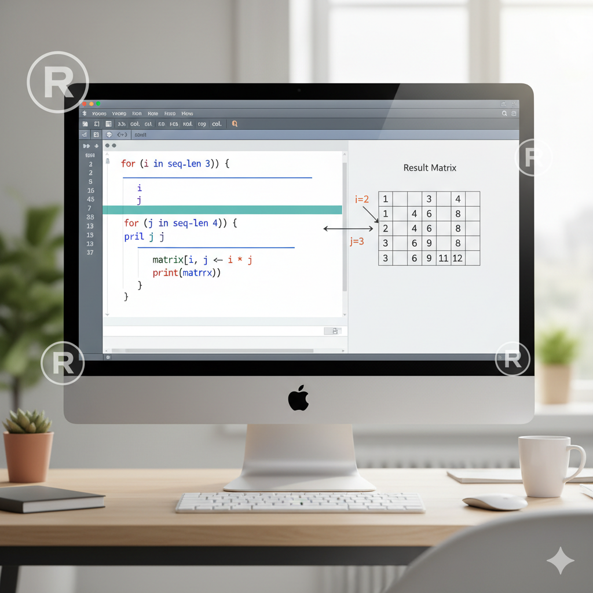

for (i in 1:3) {
for (j in 1:2) {
print(paste("Row:", i, "Col:", j))
}
}[1] "Row: 1 Col: 1"
[1] "Row: 1 Col: 2"
[1] "Row: 2 Col: 1"
[1] "Row: 2 Col: 2"
[1] "Row: 3 Col: 1"
[1] "Row: 3 Col: 2"Steven P. Sanderson II, MPH
November 3, 2025
Programming, Nested For Loop R, R Nested Loop, For Loop in R, R Loop Examples, R Programming Loops, R matrix loop, R loop optimization, R data frame iteration, R loop performance, R loop syntax, How to create a nested for loop in R with examples, Best practices for nested for loops in R programming, R nested for loop matrix manipulation tutorial, Efficient ways to use nested loops in R for data analysis, Step-by-step guide to nested for loops in R for beginners
Key Takeaway:
Mastering nested for loops in R unlocks powerful data manipulation and analysis capabilities. This guide covers syntax, practical examples, optimization tips, and common pitfalls—empowering you to write efficient, readable R code.
Nested for loops are a fundamental tool in R programming, especially when working with multi-dimensional data like matrices or performing repetitive tasks across rows and columns. While R offers many ways to iterate, understanding how to use nested for loops effectively is essential for every R programmer. In this article, you’ll learn the syntax, see real-world examples, discover best practices, and avoid common mistakes when using nested for loops in R.
A nested for loop is simply a for loop inside another for loop. This structure allows you to iterate over two (or more) dimensions—think of looping through every cell in a table, or comparing every element in one vector to every element in another. Nested loops are especially useful for matrix operations, pairwise comparisons, and complex data transformations .
The general syntax for a nested for loop in R is:
i and j are loop variables.seq1 and seq2 are sequences (like 1:5, letters, or any vector).Each time the outer loop runs, the inner loop completes all its iterations. The loop variables (i, j) are updated at each step, and after the loop ends, they hold their last assigned values .
The inner loop runs to completion for every single iteration of the outer loop. This means if the outer loop runs 3 times and the inner loop runs 4 times, the inner code block executes 12 times in total.
Let’s print all pairs of indices in a 3x2 grid:
Suppose you want to fill a matrix with the product of its row and column indices:
You can also use nested loops to process data frames:
df <- data.frame(A = 1:3, B = 4:6)
for (i in 1:nrow(df)) {
for (j in 1:ncol(df)) {
print(paste("Row", i, "Col", j, "Value:", df[i, j]))
}
}[1] "Row 1 Col 1 Value: 1"
[1] "Row 1 Col 2 Value: 4"
[1] "Row 2 Col 1 Value: 2"
[1] "Row 2 Col 2 Value: 5"
[1] "Row 3 Col 1 Value: 3"
[1] "Row 3 Col 2 Value: 6"Nested for loops are perfect for filling, transforming, or analyzing matrices—such as normalizing values or applying custom functions to each cell.
Need to compare every element in one vector to every element in another? Nested loops let you compute all possible pairs, useful in statistics and simulations.
From calculating summary statistics across groups to running simulations over parameter grids, nested loops are a staple in data analysis workflows.
break exits the innermost loop immediately.next skips the current iteration and continues with the next.Example:
[1] "1 2"
[1] "1 3"
[1] "2 1"
[1] "2 3"
[1] "3 1"
[1] "3 2"This skips cases where i equals j.
You can add if statements to control what happens inside your loops, making your code dynamic and responsive to data.
apply, lapply, or mapply when possible—they’re faster and more “R-like.”Instead of nested for loops, consider:
Or, for parallel processing:
library(foreach)
library(doParallel)
registerDoParallel(cores = 2)
result <- foreach(i = 1:3, .combine = rbind) %:%
foreach(j = 1:4, .combine = c) %dopar% {
i * j
}
print(result) [,1] [,2] [,3] [,4]
result.1 1 2 3 4
result.2 2 4 6 8
result.3 3 6 9 12These approaches can be much faster for large datasets .
c() or rbind() repeatedly inside loops; preallocate instead.Task:
Write a nested for loop in R that creates a 5x5 matrix where each cell contains the sum of its row and column indices.
Q1: Can I nest more than two for loops in R?
Yes, you can nest as many for loops as needed, but readability and performance may suffer with deep nesting .
Q2: Are nested for loops slow in R?
They can be, especially for large datasets. Prefer vectorized functions or parallel processing when possible .
Q3: What’s the difference between break and next?
break exits the innermost loop, while next skips to the next iteration of the innermost loop .
Q4: How do I avoid growing objects inside loops?
Preallocate your output (e.g., use matrix(0, n, m)) before the loop starts.
Q5: When should I use apply instead of nested for loops?
Use apply or similar functions for operations that can be vectorized, especially on matrices or data frames, for better performance .
Nested for loops are a powerful tool in R programming, enabling you to tackle complex data manipulation and analysis tasks. By mastering their syntax, understanding best practices, and knowing when to use alternatives, you’ll write cleaner, faster, and more reliable R code. Ready to level up your R skills? Start experimenting with nested for loops in your own projects today!
Enjoyed this guide?
Share your feedback below and connect with fellow R programmers on social media. Happy coding!
Happy Coding! 🚀

You can connect with me at any one of the below:
Telegram Channel here: https://t.me/steveondata
LinkedIn Network here: https://www.linkedin.com/in/spsanderson/
Mastadon Social here: https://mstdn.social/@stevensanderson
RStats Network here: https://rstats.me/@spsanderson
GitHub Network here: https://github.com/spsanderson
Bluesky Network here: https://bsky.app/profile/spsanderson.com
My Book: Extending Excel with Python and R here: https://packt.link/oTyZJ
You.com Referral Link: https://you.com/join/EHSLDTL6
@online{
\_20251103, author = {Sanderson II MPH, Steven P.},
title = {How to Create a Nested For Loop in R (Including Examples)},
date = {2025-11-03},
url = {https://www.spsanderson.com/steveondata/posts/2025-11-03/},
langid = {en}
}